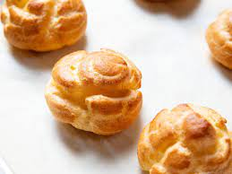

Pate a Choux

A versatile French pastry recipe
Choux is "cabbage" in French, named after its likeness to small cabbages after it is baked.
This simple recipe can be used as the base for many other pastries such as croissants, cream puffs,
beignets, churros, or gougeres.
Fill the pastry with sweet cream to transform the pastry into eclairs or use garlic, herbs, and
cream cheese for a savory profiterole.
Ingredients
- 1/2 cup (115 g; 8 Tbsp) unsalted butter, cut into 8 pieces
- 1/2 (120 ml) cup water
- 1/2 cup (120 ml) 2% or whole milk
- 1/4 teaspoon salt
- 2 teaspoons granulated sugar
- 1 cup (125 g) all-purpose flour (spoon and leveled)
- 4 large eggs, beaten
- egg wash: 1 egg beaten with 1 tablespoon milk or water
Equipment
- medium saucepan
- wood spoon or rubber spatula
- handheld or stand mixer
- 2 baking sheets
- parchment paper
- pastry brush
- piping bag
- piping tip
- piping tip
Steps
- Make the choux pastry dough: Combine the butter, water, milk, salt, and granulated sugar together in a medium saucepan over medium heat. Stir until the butter has melted. Bring mixture to a simmer. Once simmering, reduce heat to low and add the flour all at once. Stir until the flour is completely incorporated and a thick dough clumps into a ball. Mash the dough ball against the bottom and sides of the pan for 1 minute, which gently cooks the flour. Remove from heat and transfer to the bowl of a stand mixer fitted with a paddle attachment or, if using a handheld mixer, a large mixing bowl. Allow to cool down for a few minutes before adding the eggs in the next step.
- Read this step in full before starting. With the mixer running on low speed, slowly add the eggs in 3-4 separate additions mixing for 30 seconds between each. The mixture will look curdled at first, but will begin to come together as the mixer runs. Pour in the final addition of beaten eggs very slowly. Stop adding when the choux pastry has reached the desired texture: shiny, thick, and smooth with a pipeable consistency. I usually leave a few teaspoons of beaten egg behind, which can be used with the egg wash.
- Your choux pastry dough is complete! You can use it immediately or cover and refrigerate for up to 3 days. There’s no need to bring it to room temperature after refrigerating. In fact, you can store it in a piping bag (see step 6) in the refrigerator and then pipe/bake right away. If it’s too stiff to pipe, though, let it warm to room temperature a bit as the oven preheats.
- For cream puff and profiterole shells: Preheat oven to 400°F (204°C). Line two baking sheets with parchment paper. Lightly brush the parchment with water, which creates a humid environment for the pastry shells allowing them to puff up without drying out or burning.
- Transfer choux pastry dough to a piping bag fitted with a Wilton 1A piping tip. Pipe 2-inch mounds about 3 inches apart. Watch the video in the blog post above for a visual. You can also use a zipped-top bag and cut off the corner for easy piping. Using a water moistened finger, smooth down the peaks and lightly brush each with egg wash.
- Bake for 20 minutes then, keeping the pastries in the oven, reduce oven to 350°F (177°C) and continue to bake for 10-15 more minutes until golden brown. Do not open the oven as the pastries cook, as cool air will prevent them from properly puffing up. Remove from the oven and transfer to a cooling rack. Allow to cool completely before filling.
- Split open pastries and fill with homemade whipped cream, lemon curd, pastry cream, jam, a combination of these, or your favorite filling. You can also poke a hole in the pastries and pipe the filling inside. For my pictured cream puffs and profiteroles, see recipe notes.
- Cover and store leftover filled pastries in the refrigerator for up to 3 days. Cover and store unfilled pastries at room temperature for 1 day, in the refrigerator for 5 days, or freeze for up to 3 months. Thaw in the refrigerator before filling and serving.
Image credit: Serious Eats/Vicky Wasik
Recipe credit: Serious Eats, Sally's Baking Addiction